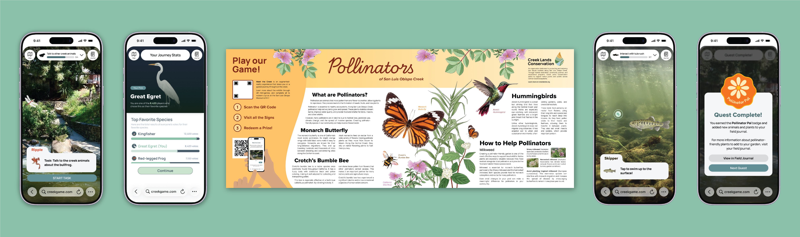
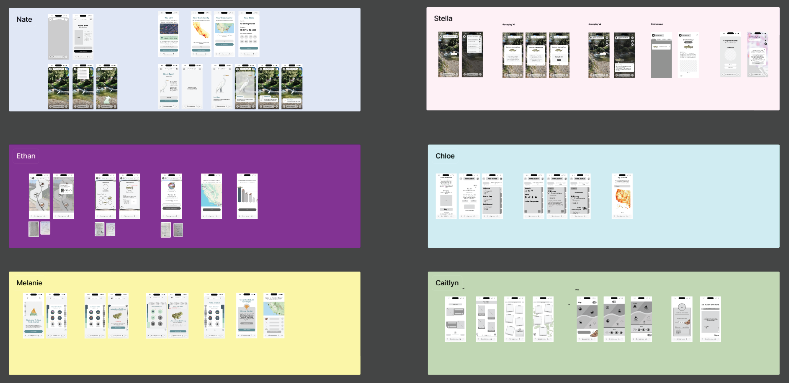
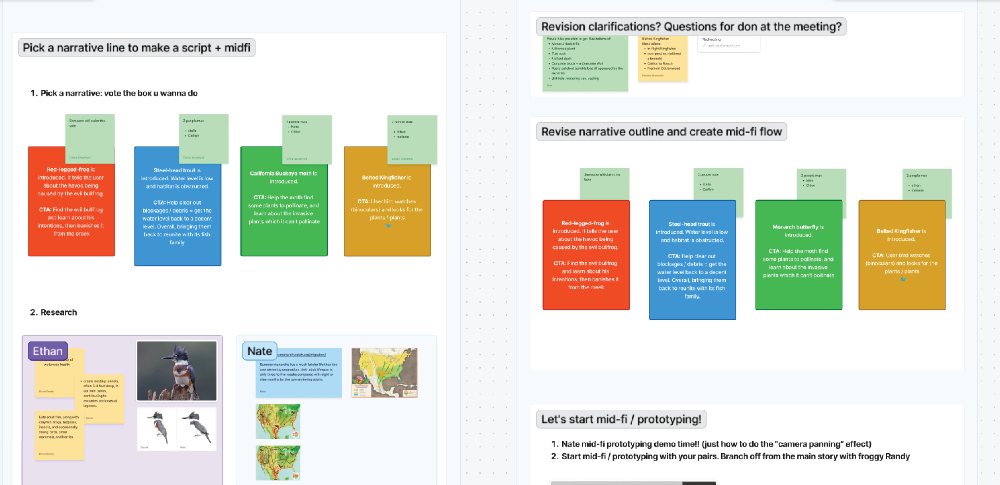
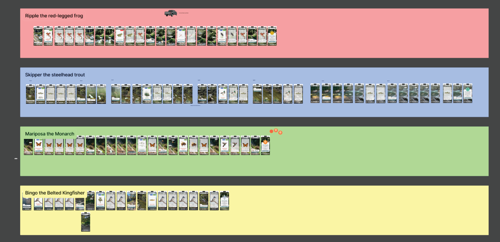
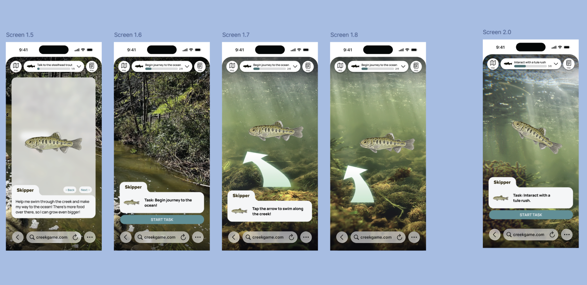
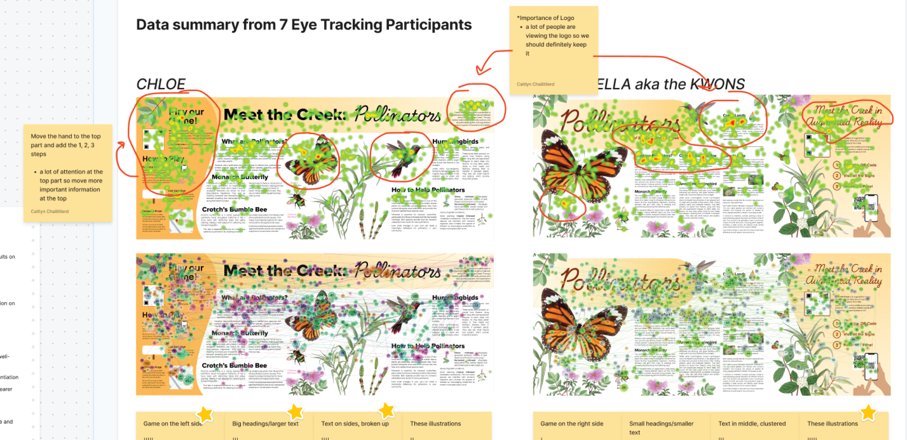
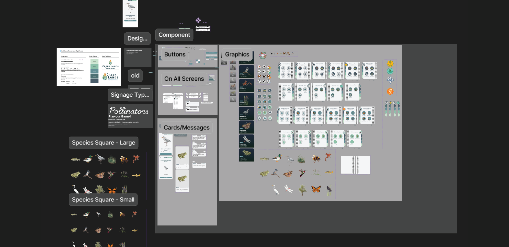
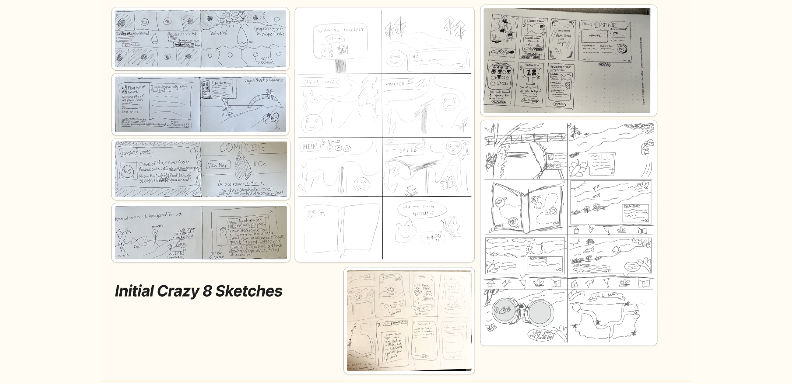

UX Designer
5 months
Designed an augmented reality education videogame in collaboration with Creek Lands Conservation.
As part of a 6 member team in Iter8, a student-ran product design agency at Cal Poly, I was tasked with researching, designing, and testing a new augmented reality web-app accompanied by physical signage that would educate users on their local ecosystem. Our client was Creek Lands Conservation, an organization focused on conserving and restoring freshwater and near shore marine ecosystems throughout California's Central Coast.
For this project, we would be working closely with a team with highly specialized knowledge of the local wildlife and knew we must perform diligent research to balance accuracy and accessibility. Along with research on the many forms of wildlife we would be representing in our game, we used several methods of research to narrow down our target audience. Affinity mapping responses from initial user interviews based on target personas allowed us to match the needs of Creek Lands Conservation and the public, in turn creating our How Might We statement.
Additionally, competitor analysis allowed us to determine successful strategies of environmentally-focused games to engage and educate users. Crazy 8 sketches allowed us to explore potential features and gameplay for our experience. We also took time for several brainstorming sessions to populate our Figjam with all of our initial ideas for the project.
Our user interviews and pilot surveys gave us a good idea of what we were going to build: a narrative-based mobile game, where users could choose their own path of exploration based on physical signage locations around the creek.


How might we deliver engaging educational experiences to the SLO public so they feel empowered to protect their local environment, preserve its culture, and understand its historical significance?
After exhausting just about every preliminary design exercise we could think of, we got started with our lo-fi designs.
The purpose of these first screens was to suss out all the possible kinks in our initial ideas. Each team member worked on 1-2 versions for each screen. We then picked our favorites and refined before meeting with our client for an initial critique. At this point, we would be meeting regularly with Creek Lands Concervation to review our storyboards and designs so that we never strayed from our shared goal.


At every round of our low and mid-fi screen development, we would discuss internally and with the client about the purpose of each screen and all the details within them. The map screen, which I primarily worked on, received consistent facelifts after each iteration to improve readability and alignment with the rest of our designs. Overall, our individual design language would converge as we narrowed down the desired UI style and major user touchpoints.
For our mid and hi-fi rounds, we switched from individual screens to our main user flow: Our story narratives. Users playing our game would encounter different examples of wildlife, each with their own "mission". Wanting to ensure our client was able to accurately picture our ideas, we painstakingly created realistic prototype flows for each narrative, with transition screens, animations, and fully-realized dialogue.


While we worked closely with each other and our client, we also leveraged various forms of user testing throughout the project.
Initial surveys and interviews helped us tremendously with our game's direction. Once we had our mid-fi flows done, we performed guerrilla testing to get a fresh perspective on our user flow. These tests proved to be extremely valuable, as we watched users react, struggle, and provide feedback on our game in real time. Seeing where users tap, swipe, etc. gives you a great sense of how intuitive your flow is.
Besides our app, we were also tasked with creating physical signage that would allow users to open it. After creating two signage designs, we were given the opportunity to perform eye-tracking testing for them using Tobii Pro. Similarly to our guerrilla testing, being able to track our users' intuitions and visualize that data created a clear path to our final design.


Along with our user testing, we also took a fieldtrip to the creek in downtown SLO to get a feel for how a user might naturally encounter our game. Overall, these various methods of testing and iteration gave us incredibly valuable insights that transformed our initial ideas into something that would immediately engage and activate the user.
For our hi-fi designs, we focused on finalizing components and truly unifying our flows.



It was amazing to be part of such a special team for this project. I'm grateful to have worked with such incredibly talented people on a project that will actually make an impact.
It's particularly interesting to look back at our initial sketches and to see just how different the end product came out. Not only did our user testing hugely inform some big design changes, but our team really did a great job at meshing our designs and figuring out which elements to keep and which ones to discard.
Our team leads for this project did a beautiful job at organizing our meetings, managing time for different aspects of the project, and keeping up with our client to make sure everything went smoothly. It's easy to get caught up in the design and research aspect of UX projects, but a well-organized team will make all the difference in the quality of the end product.
Currently, our designs are being brought to life by a team of developers. We hope to see people playing our game in the near future!
If you're interested in seeing the entire process for this project from start to finish, you can view our figjam here↗